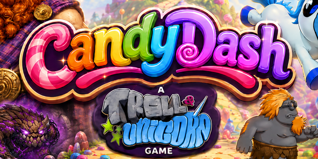

Space or ⤒ to jump — press again mid-air to double jump if you have 4+ candy charged. Arrow keys or ◀ ▶ to explore (nothing auto-scrolls); hold Down/S or ▼ to crouch and aim low. Collect Matrix-energy candies to charge Sparkles' horn (3 per shot, and it also trickles back slowly on its own — wait around if you run dry); press X or ✦ to fire a bolt and purify a corrupted creature back to its true form. Each level hides an ancient artifact on a high platform — find it before the hollow tree at the end will let you through. Level 4 ends at a real portal instead: beware the Forest Captain, who hunts you down rather than just pacing — beating him hands you all the energy Sparkles needs to beam the portal open.
Turn your phone sideways to play!